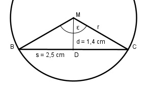

Aufgabe 56 Wie groß sind der Mittelpunktswinkel ε und der Radius r?

Im Dreieck DCM: s/2 2,5/2 cm tan ε/2 = ------ = ----------- = 0,8929 d 1,4 cm --> ε/2 = 41,8° --> ε = 83,6° s/2 sin ε/2 = ----- |*r r r * sin ε/2 = s/2 |:sin ε/2 s/2 2,5/2 cm r = --------- = ------------ = 1,9 cm sin ε/2 0,6667